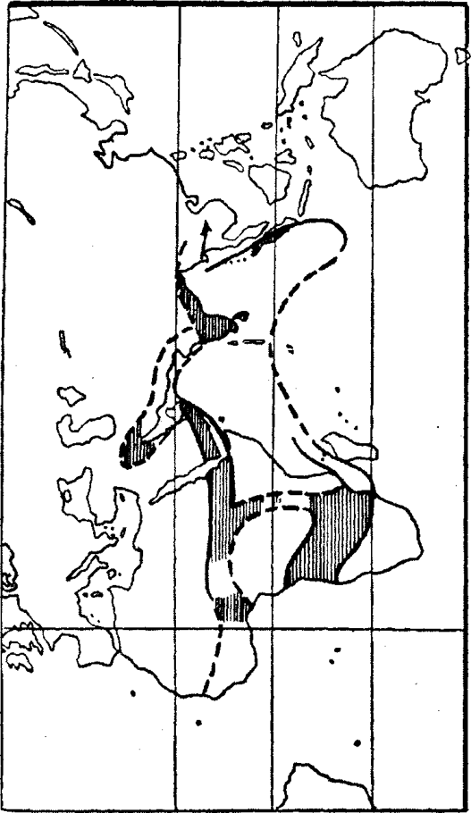

Şimdi büyük oranda Müslüman olan Sudan’ın geçmişine ışık tutan bir efsane 1912’de pazar yerinde başkent Kordofan’dan, gururlu bir aksakal, Araç-bel-Hassul tarafından anlatıldı. Hassul, Frobenius’un Kordofon keşif gezisinde devecilerin başkanıydı. Hartum’un 240 mil kadar güney batısındaki küçük El Obeid kenti194 çölün ortasındaki sığınak gibiydi ve en az nüfuslu kırsal kesimin her tarafındaki kabilelerden insanlarla kaynıyordu, Berberiler, Araplar, Nubienler. Yeni Vali Lord Kitchener’e hoş geldin demek için yığılmışlardı. Dönem siyasal açıdan nazikti. İtalya Türkiye’ye savaş açmıştı. Uyarıda bulunmadan Preveze’yi bombalamış, Trablus, Sirenayka ve On İki Adayı işgal etmişti. Kitchener yönetimindekileri kendi işlerinin başında tutabilmek için geniş bir ekonomik reform programı oluşturmuştu: tüm ülkede pamuk pazarı kurulacak, köy okulları, tasarruf bankaları, eyalet mahkemeleri açılacak ve Asuan barajı inşa edilecekti. Deveciler, göçebe hayvancılar, atlı çeteler arasında eski Kordofan’ın batıda Darfur, doğuda Etiyopya, kuzeyde Nübye ve güneyde Darnuba’ya uzanan büyük geçmişiyle ilgili eski efsaneleri anlatanlara kulak veren Almanların o anda orada bulunması karşılaştırmalı mitoloji için büyük şanstı. Darfur bölgesinden olan Araç-ben-Hassul Kordofan’ın eski bakırcı loncasından gelen son kişilerden biriydi. O da dinlemek için oturdu. Yedi gün ağzını açmadan dinledi. Yedi gün dinledikten sonra sekizinci gün kalktı, sakalını sıvazladı ve “Ben konuşayım” dedi.
Onun anlattığı Kaş’ın yıkılması efsanesiydi. ‘Bir zamanlar’ değil çok eski zamanlarda, bugün yalnız kültür bakımından değil fiziki olarak da çöl olan bölgenin yeşil ve zengin olduğu zamanlardaydı.
Büyük geçmişin soyundan gelen bir grup çömelmiş insana “o sıralar bu ülkede dört büyük kral hüküm sürüyordu” diye anlattı:
“Birinci kral Nübye’de, ikincisi Etiyopya’da, üçüncüsü Kordofan’da ve dördüncüsü Darfur’daydı. Fakat en zengini Kordofan’daki Napatalı Nap’tı. Başkenti şimdi Hofrat-en-Nahas denilen köyün yakınındaydı. Napatalı Nap bölgenin bütün bakır ve altınının sahibiydi. Onun altın ve bakırı batının büyük krallarına satılmak için Nübye’ye gönderiliyordu. Doğudan, denizden sarayına elçiler gelirdi. Güneyde birçok halk ona bağlıydı; bunlar ona demir silahlar sağlar ve sarayını binlerce köleyle doldururlardı.
Ama bu kral dünyadaki en zengin insan olmasına karşın, yaşamı insanlar arasındaki en üzücü ve kısa yaşam olacaktı. Çünkü Napatalı Nap ancak kısa bir süre krallık yapabilirdi. Onun krallığı süresince rahipler her gece yıldızları gözler, kurbanlar sunar, kutsal ateşler yaktırırlardı. Bu dua ve kurbanları bir gece bile bırakmamak zorundaydılar yoksa yıldızların izini yitirirlerdi ve geleneğe göre kralın öldürülmesi gereken günü bilemezlerdi. Geleneğin ne zaman başladığı bilinmiyor. Geceler, yıllar boyu rahipler kralın öldürülmesi gereken günü öğrenmek için nöbet beklerlerdi.
Yine, daha önceki birçok seferki gibi, gün geldi. Kutsal boğaların arka ayakları kesildi, ülkede ateşler söndürüldü, kadınlar evlere kapatıldı. Ve rahipler yeni bir ateş yaktılar. Yeni kralı çağırdılar. Yeni kral öldürülen kralın kız kardeşinin oğluydu ve adı bu kez Akaf’tı. Fakat Akaf ülkenin eski geleneklerinin değiştiği zamanda kral olmuştu ve insanlar Napata’nın yıkılmasına bu değişikliğin neden olduğunu söylüyorlar.
Her Napatalı Nap’ın ilk resmi işi kendisine ölüm yolculuğunda eşlik edecek kişileri seçmekti. Bunlar en sevdiği kişiler arasından seçilirdi ve ilk seçilen ötekilerin başı olurdu. Masal anlatma yeteneğiyle tanınan Far-li-mas adlı bir köle bir kaç yıl önce deniz aşırı ülkeden, uzaklardaki doğu krallarından biri tarafından saraya armağan olarak gönderilmişti ve yeni Napatalı Nap “bu adam benim ilk yoldaşım olacak” dedi. “Beni ölüm zamanı gelene kadar eğlendirecek ve ölümden sonra da mutlu edecek.”
Far-li-mas bunu duyduğunda korkmadı, yalnızca kendi kendine “Bu Tanrının isteği” dedi.
Ve gene o zaman Napata’da ateşin sürekli yanınası gerekti, aynı bugün Darfur’un bazı dışa kapalı yerlerinde olduğu gibi. Ve ateşin yaşaması için rahipler genç bir kızla erkeği bu göreve seçerlerdi. Bunlar ateşi bekler, yaşamları boyunca saygı görür ve kralla birlikte fakat hemen sonra, yeni ateşin tutuşturulduğu anda öldürülürlerdi. Ve şimdi Akaf için yeni ateş yakılırken rahipler gelecek dönemin ateş rahibesi olarak kralın en küçük kız kardeşini seçtiler. Adı Sali, Sali-fu-Hamr’dı. Fakat o ölümden korkuyordu ve seçimin sonucunu duyunca korkuya kapılmıştı.
Kral bir süre ülkesinin zenginlik ve krallığının zevkini çıkararak neşe içinde mutlu yaşadı. Her akşamı arkadaşlarıyla ve sarayına gelen konuklarla geçirdi. Fakat kaderi belirleyen bir gece Tanrı ona bu neşe dolu günler geçtikçe ölüme doğru bir adım daha yaklaştığını anlattı; ‘korkuyla’ doldu. Korkunç düşünceyi kafasından atamıyordu ve neşesini yitirdi. Tanrı ona ikinci bir fikir daha verdi: Far-li-mas’a öykü anlattırmak.
Dolayısıyla Far-li-mas çağrıldı. Geldi ve kral “Far-li-mas, beni eğlendireceğin gün, bugün” dedi, “bana öykü anlat.” Far-li-mas “Emrin başım üstüne” dedi ve anlatmaya başladı. Kral dinledi, konuklar dinledi. Kral ve konuklar içmeyi unuttu, nefes almayı unuttu. Köleler hizmet etmeyi unuttu. Onlar bile nefes almayı unuttular. Far-li-mas’ın sanatı afyon gibiydi ve anlatmayı bitirdiğinde herkes sanki zevkli bir baygınlığa dalmış gibiydi. Kral ölüm düşüncesini unutmuştu. Kimse akşam alacasından şafağa ulaştıklarını farketmemişti. Fakat konuklar gidince güneşin gökte yükselmiş olduğunu gördüler.
Akaf ve arkadaşları o gün akşamı zor ettiler. Ve bundan sonra her gün Far-li-mas öykü anlatması için çağrıldı. Masallarının ünü saraydan kente, ülkeye yayıldı ve kral ona her gün güzel bir elbise armağan etti. Konuklar ve elçiler ona altınlar ve mücevherler hediye ettiler. Far-li-mas zengin oldu. Şimdi kentin sokaklarında dolaşırken arkasında bir köle sürüsü gidiyordu. Halk onu seviyordu. Saygılarını göstermek için göğüslerini açıp ona gösteriyorlardı.
Mucizeyi duyan Sali kardeşine haber gönderdi: “Bana da bir kez Far-li-mas’ı dinleme izni ver” dedi.
Kral “İsteği emir sayılır.” diye yanıt verdi.
Ve Sali geldi.
Far-li-mas Sali’yi gördü ve bir an cümlesini unuttu. Bütün gördüğü Sali’ydi. Kral “Niye öyküne başlamıyorsun” diye sordu, “başka bilmiyor musun?”
Gözlerini Sali’den ayıran masalcı anlatmaya başladı. Öyküsü önce yumuşak bir hafifleme veren haşhaş gibiydi, sonra insanlara bilinçlerini kaybettirip uyutan haşhaş gibi oldu. Kısa süre sonra konuklar uykuya daldı, kral uykuya daldı. Öyküyü yalnızca düşlerinde duyuyorlardı. Hepsi daldılar yalnız Sali uyanık kaldı. Gözlerini Far-li-mas’a dikmişti. Ve masal bitip Far-li-mas ayağa kalkınca o da kalktı.
Far-li-mas Sali’ye, Sali Far-li-mas’a doğru yürüdü. Far-li-mas kızı kucakladı. Kız onu kucakladı ve “Ölmek istemiyorum” dedi. Far-li-mas gülerek kızın gözlerine baktı: “Emriniz olur, bana yolunu gösterin” dedi. Ve kız yanıt verdi: “Şimdi git. Ben bir yol düşüneceğim ve yolunu bulunca seni çağıracağım.” Ayrıldılar. Kral ve konuklar derin uykudaydı.
O gün Sali başrahibe gitti. “Eski ateşin söndürülmesi kararını veren kimdir?” diye sordu, “ve yenisinin yakılmasının?”
Rahip “Buna Tanrı karar verir” diye yanıtladı.
Sali, “Fakat Tanrı isteğini size nasıl iletiyor?” diye sordu.
Rahip, “Biz her gece yıldızları gözleriz” dedi, “onları gözden kaybetmeyiz. Her gece ayı gözleriz ve her gece hangi yıldızların aya yaklaştığını biliriz. Anlama yolumuz budur.”
Sali “Bunu her gece mi yapmalısınız. Hiç bir şey görünmeyen geceler ne olur?” diye sordu.
Rahip “Öyle gecelerde birçok kurban sunarız” dedi, “Eğer hiç bir şeyin görünmediği bir kaç gece olursa yıldızlarımızı tekrar bulamayız.”
Sali “O zaman ateşin ne zaman söndürülmesi gerektiğini bilemez misiniz?” dedi.
“Hayır” dedi rahip, “o zaman görevimizi yerine getirecek bir durumda olamayız.”
O zaman Sali ona “Tanrının işi büyüktür. Ama en büyüğü gökteki yanları değil. Onun en büyük işi bizim dünyadaki yaşamımızdır. Dün gece bunu öğrendim” dedi.
“Ne demek istiyorsun?” dedi rahip.
Sali “Tanrı Far-li-mas’a daha önce görülmemiş bir masal söyleme yeteneği vermiş” diye yanıt verdi. “Bu yetenek onun gökteki yazılarından daha büyük.”
Rahip “Yanılıyorsun” diye kızdı.
Ama Sali ona “Sen ay ve yıldızları biliyorsun” dedi, “ama Far-li-mas’ın masallarını duydun mu?”
“Hayır” dedi rahip, “duymadım.”
“O zaman nasıl karar verebilirsin” diye yanıtladı Sali. “Siz rahiplerin bile onu dinlerken yıldızları gözlemeyi unutacağından emin olun.”
“Kralın kardeşi, emin misin?”
“Bana yanıldığımı kanıtla, ancak o zaman gökteki yazının dünyadaki yaşamdan büyük olduğu anlaşılır” dedi kız.
“Bunu kanıtlayacağım” dedi rahip.
Ve rahip genç krala haber gönderdi, “Rahiplerin bu gece sarayına gelip güneşin batışına kadar Far-li-mas’ın masallarını dinlemesine izin ver.”
Kral izin verdi ve Sali, Far-li-masa haber gönderdi “Bu gece aynı geçen geceki gibi yapmalısın. Yol bu.”
Ve böylece güneşin batma saati yaklaştığında kral, konuklar ve elçiler toplanırken bütün rahipler de gövdelerinin üst kısmı çıplak ve yere uzanmış onlara katıldılar. Başrahip “Far-li-mas’ın masallarının Tanrının işlerinden daha büyük olduğu iddia edildi” dedi. Kral “Ona kendiniz karar verin” diye yanıt verdi. Başrahip “Ey kral, ay yükselirken görevimizi yerine getirmek için sarayınızdan ayrılırsak bizi bağışlayın” dedi. Kral da “Tanrının istediği gibi yapın” dedi.
Böylece rahipler yerlerini aldılar. Konuklar ve elçiler de yerlerine geçti. Salon dolmuştu ve Far-li-mas aralarına oturdu. Başla dedi kral, “başla, sevgili ölüm yoldaşım.” Far-li-mas Sali’ye baktı, Sali Far-li-mas’a ve kral “Fakat niye masalına başlamıyorsun, başka bilmiyor musun?” dedi.
Gözlerini Sali’den ayıran masalcı anlatmaya başladı.
Masalı güneşin alçalması gibi başladı. Bulutlarla örten ve iç geçiren haşhaş gibiydi. Baygınlık veren haşhaş gibiydi. Ölü gibi bayıltan haşhaş gibiydi. Ve ay yükseldiğinde kral, konuklar, elçiler uykuya dalmıştı. Rahipler de derin uykudaydı. Yalnız Sali uyanıktı, Far-li-mas’ın tatlı sözlerini dudaklarından gözleriyle içine çekiyordu.
Masal bitti. Far-li-mas kalktı ve Sali’ye doğru gitti. Sali de ona doğru ve “Bırak şu dudakları öpeyim” dedi, “o tatlı sözlerin çıktığı dudakları.” Dudaklarını öperken, “Bırak bana güç veren şu gövdeye sarılayım” dedi. Kucaklaştılar, kolları bacakları sarıldı, uyuyanlar arasında yüreklerini oynatan mutlulukla uyanıktılar. Sali sevinçle “Yolu anladın mı?” dedi. “Evet” dedi öteki, “anladım.” Ve salondan çıktılar. Sarayda yalnız uyuyanlar kaldı.
Sali ertesi sabah başrahibe geldi. “Şimdi söyle” dedi, “düşüncemi suçlarken haklı mıydın?”
“Yanıtını şimdi vermeyeceğim” dedi adam. “Far-li-mas’ı bir kez daha dinlemeliyiz. Çünkü dün hazırlıklı değildik.”
Ve böylece rahipler dualarını ve kurbanlarını sunmaya başladılar. Bir çok öküz ayağı kesildi, ve gün boyunca ara vermeden tapınaktan dualar yükseldi. Akşam olunca saraya geldiler.
Sali gene kralın, kardeşinin yanına oturdu ve Far-li-mas anlatmaya başladı ve bir kez daha şafak sökmeden önce herkes, kral, konuklar elçiler ve rahipler uykuya daldı, esriyip kaldı. Fakat Sali ve Far-li-mas uyanıktı ve birbirlerinin dudaklarından sevinç emdiler. Gene kolları bacakları eş oldu, sarıldılar. Ve günler boyu bu böyle devam etti.
Halkın arasmda nasıl önce Far-li-mas’ın masalları yayıldıysa şimdi de rahiplerin dua ve kurbanlarını ihmal ettikleri dedikoduları yayıldı. Huzursuzluk her yeri sardı ve bir gün şehrin tanınmış bir soylusu başrahibe çıktı.
“Gelecek şöleni ne zaman kutluyoruz” diye sordu, “seyahat planlıyorum ve şölen için dönmek istiyorum. Ne kadar zaman var?”
Rahip utandı. Ay ve yıldızları görmeyeli çok olmuştu. “Bir gün bekle” dedi, “sana söyleyeceğim.” “Sağol” dedi adam, “yarın geleceğim.”
Rahipler toplandı ve başkanları “En son hangimiz yıldızların yolunu gözledi” diye soruşturdu.
Hepsi susuyordu. Tek yanıt veren olmadı. Çünkü hepsi Far-li-mas’ın masallarını dinliyordu.
“Aranızda yıldızların yolunu ve ayın durumunu gözleyen kimse yok mu?”
Hepsi suskun oturdular sonunda biri, çok yaşlı bir tanesi kalkıp konuştu, “Büyülendik” dedi. “Far-li-mas bizi büyüledi. Tekimiz bile şölenlerin ne zaman kutlanacağını söyleyemeyiz, ateşin ne zaman söndürüleceğini ve yeni ateşin ne zaman yakılacağını söyleyemeyiz.”
Başrahip korkuya kapıldı. “Bu nasıl olur” diye bağırdı. “Halka ne diyeceğim?”
Yaşlı rahip yanıt verdi: “Bu Tanrının isteği. Eğer Far-li-mas Tanrı tarafından gönderilmemişse onu öldürün. Çünkü o yaşadığı ve konuştuğu sürece her şey onu dinleyecek.”
“Ama adama ne diyeceğim” diye sordu başrahip.
Hepsi susuyordu. Ve topluluk sessizlik içinde dağıldı.
Başrahip Sali’ye gitti. “O ilk gün bana söylediğin neydi?” dedi. Sali, “Tanrının işi büyüktür fakat en büyüğü gökteki yazısı değil, dünyadaki yaşamdır demiştim” diye yanıt verdi. “Siz benim sözümü doğru değil diye reddettiniz. Ama şimdi bugün söyleyin, yalan mı söyledim?”
Rahip “Far-li-mas Tanrıya karşı geliyor, ölmeli” dedi.
Sali “Far-li-mas kralın ölüm arkadaşı” diye yanıtladı.
Rahip “Kralla konuşacağım” dedi.
Ve Sali “Tanrı kardeşimin içinde. Ona ne düşündüğünü sor” diye yanıtladı.
Başrahip saraya yöneldi ve kralı, kardeşi Sali şimdi yanındayken, görmek istedi. Kralın karşısında göğsünü açtı, kendini yere attı ve dua etti: “Beni affet ey Kral!”
Kral “Yüreğindekileri söyle bana” dedi.
Başrahip “Bana ölüm arkadaşın Far-li-mas’ı anlat” dedi.
Kral ona “Tanrı bana önce yaklaşan ölüm gününü düşündürdü, korktum. Sonra Tanrı bana Far-li-mas’ı anımsattı. Far-li-mas bana doğudaki deniz aşırı bir ülkeden armağan olarak gönderildi. Tanrı ilk düşünceyle benim kafamı karıştırdı. İkincisiyle ruhumu yeniden canlandırdı ve beni -bütün ötekilerle birlikte- mutlu kıldı. Far-li-mas’a güzel elbiseler verdim. Arkadaşlarım ona altın ve mücevher verdiler. Bunların çoğunu halka dağıttı. Far-li-mas zengin ve bunu hak ediyor, halk da benim gibi onu seviyor.”
Başrahip “Far-li-mas ölmeli” dedi, “Far-li-mas kurulu düzeni bozuyor.”
Kral, “Ben ondan önce ölürüm” dedi.
Fakat rahip “Bu konuda kararı Tanrının iradesi verecek” dedi.
“Öyle olsun” dedi kral, “ve bütün halk bu konuda tanıklık edecek.”
Rahip çıktı ve Sali Akaf’la konuştu “Ey kralım, ey kardeşim! Yolun sonu yakın. Ölüm arkadaşın yaşamının canlandırıcısı olacak. Fakat benim kaderimin yaşamak için ona gereksinimi var.”
“Kardeşim Sali” dedi Akaf, “o zaman onu alabilirsin.”
Haberciler şehri dolandılar ve her köşede Far-li-mas’ın o akşam herkesin önünde büyük meydanda konuşacağını söylediler. Meydanda sarayla rahiplerin binaları arasına örtüler, arkasına bir taht yerleştirildi ve akşam olunca her yerden gelen halk meydanı doldurdu. Binlerce kişi toplandı. Rahipler gelip yerlerini aldılar. Konuklar ve elçiler gelip oturdu. Sali kardeşinin, örtüler arkasındaki kralın yanına oturdu. Sonra Far-li-mas çağrıldı.
Far-li-mas geldi. Bütün adamları arkasındaydı, hepsi göz kamaştırıcı elbiseler giymişlerdi. Rahiplerin arkasına yerleştiler. Far-li-mas kralın önünde eğilip yerini aldı.
Başrahip kalktı. “Far-li-mas bizim kurulu düzenimizi bozdu” dedi. “Bu gece Tanrının isteğiyle olup olmadığı anlaşılacak.” Yerine oturdu.
Far-li-mas gözlerini Sali’den aldı, kalabalığa baktı, rahiplere göz attı ve kalktı. “Ben Tanrının hizmetkârıyım” dedi. “İnsan kalbindeki bütün kötülüklerin Tanrıya hoş gelmediğine inanırım.” “Bu gece” dedi Far-li-mas “Tanrı kararını verecek.” Sonra masalını anlatmaya başladı.
Sözleri önce bal gibi tatlıydı, sesi ilk yağmurun toprağa sızması gibi kalabalığı etkiliyordu. Dilinden misk veya buhurdan daha hoş bir koku yayılıyordu. Başı ışık gibi parlıyordu, karanlık gecede tek parlayan şey oydu. Ve masalı başlangıçta insanları uyanıkken mutlu kılan haşhaş gibiydi, sonra düş görenlerin haşhaşı gibi oldu. Sabaha doğru sesini yükseltti fakat sözleri insanların yüreğinde yükselen Nil gibi kabardı. Bazıları için cennete giriyorlarmış gibi huzur vericiydi. Bazıları içinse ölüm meleği gibi korkutucu. Bazılarının ruhlarına neşe dolarken, ötekilerin yüreğine korku saldı. Ve şafak yaklaştıkça sesi daha da güçlendi, insanları daha çok titretti, kalabalık savaşta gibi birbirlerine karşı yüreklerini coşturdu, fırtınalı gecenin gökleri gibi herkeste birbirlerine karşı şimşekler çaktırdı. Kızgınlığın şimşekleri ve gazap gürlemeleri birbirine karıştı.
Ama güneş yükselip Far-li-mas masalını tamamlayınca hepsinin karışmış kafalarına dile getirilemez bir şaşkınlık doldu. Canlı kalanlar çevrelerine bakındıklarında gözleri rahiplere takıldı. Rahipler ölmüş yatıyorlardı.
Sali ayağa kalktı ve kendini örtüler ardındaki kralın önüne attı. “Ey kralım” dedi, “Ey kardeşim! Akaf! Peçeni at; kendini halkına göster ve şimdi kurbanını sun, kendini! Çünkü bunlar Ölüm Meleği, Azrail tarafından Tanrının emriyle yok edildiler.”
Hizmetçiler tahtın çevresindeki örtüyü kaldırdılar ve Akaf ayağa kalktı. Napata halkının gördüğü ilk kraldı. Gençti ve doğan güneşin güzelliği kadar güzeldi.
Kalabalık neşeli çığlıklar attı. Beyaz bir at getirilerek kral üstüne bindirildi. Kız kardeşi solunda yürüyordu, sağında masalcı, tapınağa gittiler. Kral tapınaktaki kazmayı aldı ve kutsal yere üç çukur açtı. Far-li-mas bunlara üç tohum attı. Sonra kral kutsal yere iki çukur açtı ve Sali bunlara iki tohum attı. Hemen ve aynı anda beş tohum filizlendi, insanların gözleri önünde büyüdü ve öğleye kadar beşinin ucundaki tohum da olgunlaştı. Kentin bütün mahallelerinde bütün babalar büyük boğaların ayaklarını kestiler. Kral tapınaktaki ateşi söndürdü ve kentteki bütün babalar kendi ocaklarındaki ateşi söndürdüler. Sali yeni bir ateş yaktı ve şehrin bütün genç bakireleri gelip bu ateşten aldılar. Ve o günden sonra Napatâ’da insan kurbanı olmadı.
Böylece Akaf, Tanrı yaşlandığında canını alana kadar yaşayan ilk Napatalı Nap oldu. Kral öldüğünde tahtına Far-li-mas geçti. Fakat böylece Napata kenti zenginliğinin sonuna ulaştı ve kentin sonu geldi. Çünkü Akaf’ın kurnaz ve iyi eğitilmiş prensi yurt dışına gitti, her ülkeden ve her kraldan ona armağanlarla birlikte akıllı adamlar gönderildi, öğütler istendi. Büyük tüccarlar onun başkentine yerleşti ve Napata ürünlerini dünyaya satmak için doğudaki denizlerden bir çok gemi geldi. Madenleri altın ve bakır isteğini karşılamaya yetmiyordu. Ve yerine Far-li-mas geçince ülkenin zenginliği daha da arttı, doruğuna ulaştı. Far-li-mas’ın ünü bütün ülkelere yayıldı, batıdan doğudaki denizlere kadar ulaştı. Ve bu ünle insanların yüreği kıskançlıkla doldu, Far-li-mas ölünce komşu ülkeler anlaşmaları bozdular, Napata krallığına savaş açtılar. Napata çöktü. Napata yıkıldı. İmparatorluk parçalandı. Vahşiler ve barbarlar eline geçti. Altın ve bakır madenleri unutuldu, kentler yok oldu. O büyük günlerden hiç bir şey kalmadı. Yalnızca Far-li-mas’ın masallarının anısı; kendisiyle birlikte deniz ötesi ülkesinden doğudan getirdiği masalların anısı kaldı.
İşte, şimdi son çocuklarının Darfur’da yaşadığı Kaş ülkesinin yıkılışının öyküsü bu.195
Bu masalın kayıt ve yayımlanmasını devecilerin başkanından dinleyip yazmasına borçlu olduğumuz Leo Frebonius, Sicilyalı Diodorus Siculus’un, İÖ 60-57 yıllarında Mısır’ı ziyaret ettiğini ve Tarihsel Kütüphane’de Yukarı Nil’de o zaman Meroe-Napata olarak bilinen eyalette Nubien Kassitler arasında insan kurbanı ritüelinin bulunduğunu yazdığına dikkat çeker.196 Rahipler krala haberci gönderir, tanrıların kehanet aracılığıyla zamanın geldiğini kendilerine bildirdiğini iletir ve Diodorus’a göre krallar boş inançlar nedeniyle bu karara uyarlardı. Fakat Diodorus’un anlattığına göre, İskenderiye firavunu Ptolemaios II. Philadelphos (İÖ 309-246) döneminde gelenek, Ergamenes adlı Etiyopyalı bir monark tarafından kaldırıldı. Ergamenes Yunan eğitimi almıştı. Dinden çok felsefeye güvenerek tahta çıkmasına değecek bir cesaretle o zamana kadar korkulan Altın Tapınağın üstüne yürüdü, rahipleri kesti ve korkulu geçmişten gelen geleneğe son vererek her şeyi kendi anlayışına göre yeniden örgütledi.197
Araç-ben-Hassul’un öyküsü, Frobenius’un belirttiği gibi, yalnız anlatım biçimiyle ve şaşırtıcı stiliyle değil, fakat konusuyla da 1001 Gece masallarına benziyor. Hepimizin anımsayacağı gibi, bu masal derlemesinin çerçevesi, akıllı gelin Şehrazat’ın, büyüleyici masal anlatma yeteneğiyle hem kendisini hem de kendi kuşağından kızları ölümden kurtarmasının öyküsüdür. Aynı sanat aynı sorunu çözmektedir fakat bu kez Şehrazat gibi akıllı ve bütün işlemin başlatıcısı olan genç, kızla birlikte kralı da kurtarmaktadır.
Arap 1001 Gece Masallarının ana yapısının oluştuğu tarih İS sekiz, on dördüncü yüzyıllar arasıdır. Bazı bölümler on yedinci yüzyıl kadar geç bir dönemde oluşup derlenmiş görünmektedir.198 Bu dönem dünyanın en büyüleyici mucize masallarını borçlu olduğumuz dönemdir. Çünkü tam da bu yüzyıllar, yani ortaçağ boyunca, masal söyleme geleneği Arap ve Mısır kadar Avrupa, Hint ve İran saraylarına en belagatlı biçimiyle yerleşmiştir. Yani, Kaş’ın yıkılışı efsanesi gerçekten İÖ üçüncü yüzyılda Yunan hümanizminin Sudan Yukarı Nil’ine yayılıp insan kurbanı ritinin kaldırıldığı kaydedilen Ergamenes’in eyleminden temelleniyor olsa bile, olay İS onuncu yüzyıl biçim ve anlayışıyla anlatılmaktadır.
Peri masalları üstüne çalışmış hiç kimse yirminci yüzyıl masalcısı Araç-ben Hassul’un ortaçağda yaşayan masal biçim ve stiline tamamiyle sadık kalacağından kuşku duymaz. 1880’lerde batı İrlanda’da Jeremiah Curtin tarafından toplanan masalları199 okuyup Standish H. O’Grady’nin Fianna ve İrlanda azizleriyle ilgili on beşinci yüzyıl İrlanda elyazmaları çevirile-riyle200 karşılaştırmak bunu kanıtlamaya yeter. Geleneksel masalcıların en küçük ayrıntıyı bile ezberinde tutma yeteneği Alman masallarını derlerken Grimm Kardeşlerin de dikkatini çekmiştir. “Geleneksel malzemenin kolayca bozulduğuna ve özensiz biçimde korunabildiğine dolayısıyla uzun dönem yaşayamayacağına inanan bir kimse” diye yazmışlardı, “yaşlı masalcının nasıl daima öyküsüne sadık kaldığını, doğruluk konusunda nasıl titizlendiğini duymalıdır. Hiç bir yinelemede değişiklik yapmaz, bir hatasını farketse hemen kendisi düzeltir. Eski yaşam biçimini sürdüren insanlar arasında kalıtımsal biçimlere bağlılık, değişiklik peşinde olan bizlerin sandığından fazladır.”201
Dolayısıyla Kaş’ın yıkılması efsanesinin Şehrazat derlemeleri döneminden ve anlayışından kaynaklanması tamamiyle olasıdır. Fakat Şehrazat dönemi ne zamandır?
Onuncu yüzyıl Arap tarihçisi Ali Ebu’l Hasan el-Mes’u-dî “masalları ilk toplayan ve kitap yapan İranlılardır” diye yazıyor. “Araplar bunları çevirdiler ve eğitim görmüş olanlar onları benimsedi ve başka masalları da onlara benzetti.” Tarihçiye göre “ilk kitap Hazâr Afsân (Bin Romans)”dı ve biçimi bu anlayıştaydı. İran krallarından biri bir kadınla evlenip gece onunla yattıktan sonra sabah öldürtmeyi alışkanlık edinmişti. Adı Şehrazat olan bilge ve bilgili bir kızla evlendiğinde kız ona masallar anlattı ve gecenin sonunda öyküyü, krala yaşamını bağışlattırıp ertesi gece sonunu merak edip anlattıracak biçimde bağladı. Böylece bin gece geçti. Bu sırada kral kızla yatıyordu ve kız ona bir çocuk bağışladı, ona oynadığı oyunu anlattı. Kızın zekâsı kralın hoşuna gitti, onu sevdi ve canını bağışladı.202
Arap 2001 Gece Masallarının kaynağını, derlemenin Arap Suriye, Irak ve Mısır’daki katkılarla şimdiki büyüklüğüne ulaştığı kabul edilse bile, İran’a bağlamak gelenekleşmiştir. Fakat Frobenius Sudan’da derlediği masallarla bu görüşe yeni ve çok ilginç bir hipotez getiriyor; İran ve Sudan masallarının türetildiği ortak bir kaynak vardır. Bu kaynak güney Arabistan, şaşırtıcı köle Far-li-mas’ın Napatalı Nap’ın sarayına geldiği ülke olan Hadramut’tur, “doğu denizinin (Kızıl Deniz) ötesinde”.
Frobenius “Sudan masalımız daha eski bir kuşaktan mı” diye sorar, “Hint, İran ve son Mısır değişiklikleriyle yontulmamış ve aşırı değiştirilmemiş bir dönemden mi?”203
Yani, bu seçkin Sudan öyküsüyle 1001 Gece Masallarının, şimdi çöl olan bir ülkeden çıkmış aynı geleneğin iki türevi olduğunu mu söylemek durumundayız? Ortak alan kumlarına eski kentlerin gömülmüş olduğu bugün doğru olarak Arap çölü denilen eskiden verimli Arabistan olan ülke mi?
Kordofan masallarını toplayışını anlatan Frobenius şöyle yazar: “1915 yılında Kızıl Deniz boyunca yavaş yavaş ilerlerken Arap denizcilerle gevezelik ettim ve sorunumuzla ilgili birçok noktayı açıklayabilecek oldukça yaygın bir inanışı öğrendim.
Konuştuğum kişiler, büyük güvenle ve üstüne basa basa 1001 Gece masallarının ilk Hadramut’ta anlatıldığını ve oradan dünyaya yayıldığını söylediler. Özellikle üstünde durdukları Denizci Sinbad masalıydı.”204
Bu iki geleneğin ilişkisi -bildiğim kadarıyla- şimdiye kadar çözüme kavuşturulmadı. Bu konudan ikinci fakat hiç de daha az etkileyici olmayan bir sorun daha çıkıyor. Bunun yanıtını artık ayrıntılarıyla verebiliyoruz. Bunu da öneren Frobenius’tu. Bu, Sudan geceleri macerasının olası tarihsel veya tarih öncesi altyapısıdır. Öykünün basitçe uydurma olmayıp gerçek tarihsel koşulların daha sonraki masal geleneğine yansımış olması olanağı yok mu?
Diodorus’un metni bu olasılığı ortaya koyuyor. Sir James G. Frazer’in on iki ciltlik anıtsal eseri Altın Dal’da toplanan geniş malzeme de, eski dünyada, tam buradaki gibi, anaerkil soy yoluyla kral kurbanı ritüelinin bulunduğunun kanıtlarını vermiştir. Beyaz Nil’in Şillukları arasında (şimdi tam masalımızın söz konusu ettiği bölgede yaşayan halk) krallarını öldürme geleneği Frazer’e göre daha birkaç yıl öncesine kadar yaşıyordu. Frazer, C. G. Seligman’ın araştırmalarından alıntı yaparak “krala kaderini şeflerin bildirdiği, sonra kralın bu olay için özel olarak yapılan bir kulübede boğulduğu yazılmıştır” demektedir.205 Daha sonra 1926 da eski kralların kaderleri ve sarayları ile ilgili yeni veriler Sir Leonard Woolley’in eski Sümerin ay tanrısı kenti Ur’daki kraliyet mezarları denilen kazılarında ortaya çıkarılmıştır. Bu acı yüzlü keşif daha sonraki bir bölümde anlatılacak. Yani, bildiklerimize dayanarak, büyük bir güvenle, hiyeratik şehir devletlerinin en eski döneminde kral ve maiyetinin ritüel olarak ayın yıldızlarla ilişkisine göre belirlenen bir zaman içinde öldürüldüğünü söyleyebiliriz ve Kaş efsanemiz de dolayısıyla geçmişin derinliklerinden gelen, romantik biçimde sonraki masalcıların sanatına yansıyan bir yankıdır.
Vesta bakiresi Sali’nin -1001 Gecenin Şehrazat’ının ilişkisi gibi- arkaik kral kurbanı arasındaki özgün ürpertici ilişkisinin anlamı, son zamanlara kadar Sudan’da geleneksel olarak uygulanan kraliyet ritüelleri üstünde odaklaştığımızda ortaya çıkıyor.
Şilluklar arasında Tanrının (Nyakang diyorlar) isteğini bilen tek grup olan rahipler, kralın yedi yıllık dönemin sonunda veya hasat ve sürülerin zenginliğinde bir düşüş varsa bundan da önce öldürülmesini sağlıyorlardı. Kral kutsal olduğundan onu ancak soylular görebilirdi. Çocukları bile yaşadığı yere giremezdi. Çevresi soylularla sarılmış ortaya çıktığında tellallar halkı evlerine sokardı. Ölüm zamanı geldiğinde baş rahip soyluların en üstünlerine ve onlar da sınıflarının toplanan üyelerine bunu bildirir ve sessizlik içinde elinin bir hareketiyle onlara durumu anlatırdı. Gizin, ayın son ve çeyrek olduğu karanlık gecelerden birinde, ilk yağmurdan önceki dönemde ve ilk tohumlar atılmadan önce tamamlanması gerekirdi. İşlem soyluların başı tarafından yerine getirilirdi, başka hiç kimse duymaz, bilmez veya hakkında konuşamazdı. Ve ağlayıp üzülme olmaması gerekiyordu. Kral boğulur ve canlı bir bakireyle birlikte gömülürdü. Bu gövdeler çürüdüğünde kemikleri bir boğanın derisinde toplanırdı. Bir yıl sonra yeni kral atanır ve halefinin mezarında yüzlerce sığır boğazlanırdı.207
Bu tür eski gelenekler yalnız Yukarı Nil’deki halklar tarafından değil, Sudan’ın öteki bölgelerinde, Mozambik, Angola ve Zimbabve’de de biliniyor. Hindistan ve Endonezya’da da bu ritler bilinmektedir. Gerçekten kutsal bir kralın öldürülmesinin en canlı kaydı Duarte Barbosa’nın On Altıncı Yüzyıl Başında Doğu Afrika Sahileri ve Malabar’ın Anlatımı’ndadır.
Malabar’ın (bugüne kadar çok güçlü anaerkil gelenekleri olan bir bölge) güney Hint eyaleti Quilacare’nin Tanrı kralı, Jüpiter’in zodyakta bir dönüşünü tamamlayıp Yengeç burcundaki geri dönme hareketine başladığı zamanın sonunda, yani on iki yılın sonunda, kendini kurban etmek zorundaydı. Zaman gelince kral ahşaptan iskele yaptırdı ve her yere ipek askılar astırdı. Ritüel olarak büyük törenler ve müzik eşliğinde bir su haznesinde yıkandıktan sonra tapınağa gitti ve burda ilahlara tapındı. Sonra iskeleye çıktı ve halkın önünde, keskin bıçaklar alarak gövdesinden parçalar kesmeye başladı -burun, kulaklar, dudaklar, etinin olanak verdiği bütün parçalar- kesip çevresine atıyordu, kanı o kadar akmıştı ki kendinden geçmek üzereydi, o zaman boğazını kesti.208
Kutsal kral kurbanının arketipini tartışırken Frobenius “ana motif tanrının ölüm zamanını belirlemesi” diye yazar.
“Yüce Tanrı ölmelidir; yaşamını yitirmeli ve yeraltı dünyasına, dağa kapanmalıdır. Tanrıça (daha sonraki Babil biçimini kullanarak ona İştar diyelim) kendisini öldürme işlemi bittikten sonra yeraltına onun yanına iner ve onu kurtarır. Gizemlerin en büyüğü yalnız ünlü şarkılarda değil dramatik olarak yaşadığı eski yeni yıl şölenlerinde de kutlanmaktadır. Bu dramatik varoluşun dünya tarihinde mitolojinin mantık ve işleyişinin en güçlü ifadesi olduğu söylenebilir.
Bütün fikir, dahası, toplumsal kurumların tekabül eden örgütlenişinde görülebilir. En iyi korunmuş kalıntılar ve yankılar Afrika’da bulunabiliyor. Gerçekten Güney Afrika’nın “Eri-tre” bölgesinde (Mozambik, Angola, Zimbabve) bu fikir eylem olarak bugüne kadar yaşıyor. Burada ulu baş tanrıyı temsil eden kralın adı bile ‘Ay’dır; ikinci karısı ayın sevgilisi Venüs gezegenidir. Ve tanrının ölüm zamanı geldiğinde kral ve Venüs eşi boğulurlar. Cesetleri bir dağdaki mezar-mağaraya götürülür. Orada ‘yeniden’ veya yeni göksel küreler olarak dirilirler. Bu, hiç kuşkusuz, mitolojik ve ritüel bağlamın en eski biçimini temsil ediyor olmalıdır. Eski Babil’de bile yeni yıl şöleninde kral yalnızca soyulup, aşağılanıp, dövülürken, pazar yerinde yerine geçen biri, boynuna geçirilen ilmek sıkılarak bütün törensel ihtişamıyla öldürüldüğüne göre bunun zayıflamış bir biçimi vardır...”

Kral-öldürme ritüelinin yayılımı. Frobenius’tan.
Frobenius “öyle görünüyor ki, bu fikir ve gelenekler öbeği Hazar Deniziyle İran Körfezi arasında bir yerden kaynaklanır ve buradan güneydoğuya, Dravid kültür Hindistan’ına ve güney batıya Güney Arabistan’dan Doğu Afrika’ ya yayılmış” önerisinde bulunuyor.209
Kralın ölüm-kardeşi Sali ile düğün gecesi ölecek olan kral gelini Şehrazat masallarının bulanık, karanlık geçmişin yankıları olduğuna, masal dünyasının bulanık ve karanlık olmayan anıları olduğuna inanmamız için yeteri kadar neden var. Ve kral kaderine hükmeden rahipler kurulunun diktatörlüğüne tabi bir kralın başında bulunduğu ilkel kabile söz konusu olduğunda, bu kültürün gerçekte ilkel olmayıp gerilmiş olduğunu düşünmek de doğru olacak. Düzeltme fikri (Platonun daha önce alıntılanan sözleriyle) “kafasının içinde doğumda karışan düzenini dünyanın uyum ve dönüşümlerini öğrenerek düzeltmelidir” ve böylece “Tanrıların şu anda ve gelecek yaşamda insanlık için hazırladığı en iyi yaşama kavuşabilir” anlayışıyla son bölümün sonuç bölümünde değerlendirdiğimiz hiyeratik şehir devletinin merkezinde yer alan düşünceden türetilmiş olmalıdır.
Ritüel insan kurbanının tartışılması gereken daha derin bir tabakası daha vardır. Bu, krallarla ve göklerle ilgili değil, basit köylüler ve gıdaları olan bitkilerle ilgili; tropik bahçelerin uzak kültür bölgelerine ait. Ve bu gerçekten ilkel olabilir. Fakat bu tabakaya inmeden önce Vesta bakiresi Sali’nin de adandığı yeni ateş yakılması ritüeli üzerinde biraz duralım.
Sayısız Afrika kabilesinde (örnek olarak Mundang, Hausa, Gvari, Hupeler Sudan’da, Yorubalar Nijerya’da ve güneyde Ruanda, Vesegue, Vadoe, Vavemba, Valumbve, Vahemba, Lunda, Kanioka, Bangala ve Biheler) son zamanlara kadar uygulanan ve anımsanan ritler karşılaştırıldığında, kral öldüğünde bütün tapınaklarda bütün ateşlerin söndürüldüğü ve yönetimsiz dönem sırasında, kralın ölümü ve selefinin yerine geçmesi arasında geçen zaman içinde kutsal ateş olmadığı ortaya çıkmaktadır. İkinci ateş ritüel olarak ergin erkek ve kız tarafından yakılmaktadır. Bunlar yeni kral, hanedan ve bütün halk önünde tamamiyle çıplak görünmek zorundadırlar. Ellerinde ateş-sopaları vardır, biri erkek (kıvrımlı sopa) öteki dişi (dip) olarak bilinir. İki genç yeni ateşi yakar ve sonra öteki, simgesel olarak ona benzeyen eylem olan ilk cinsel birleşmelerini yerine getirirler. Bundan sonra hemen hazırlanmış olan çukura atılır ve onların çığlıklarını bastırmak için bağırtılar koparılırken canlı canlı gömülürler.210
Böylece Ölüm Kralın, Büyük Şef Ölümün ülkesine giriyoruz.